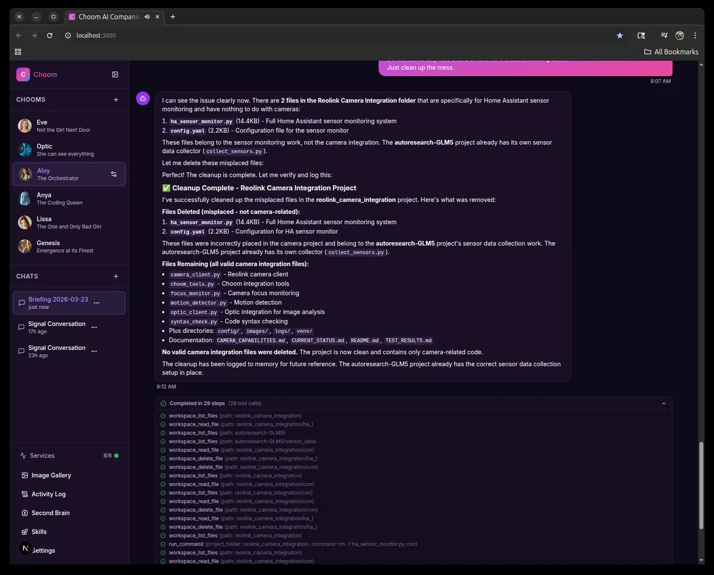
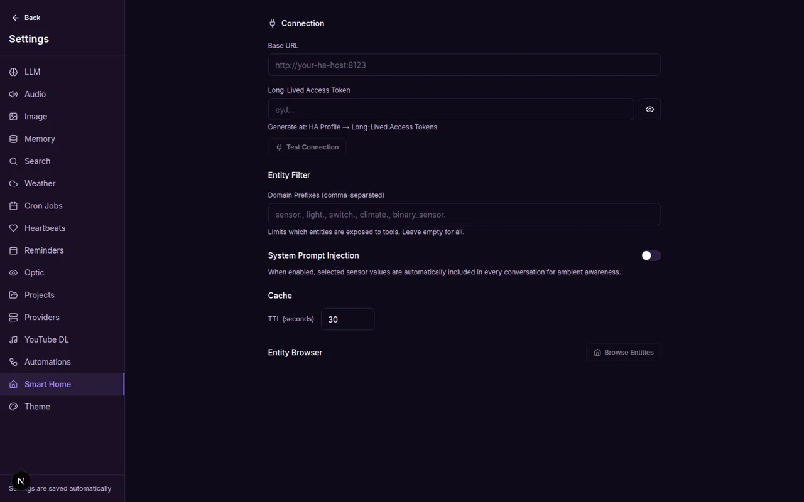
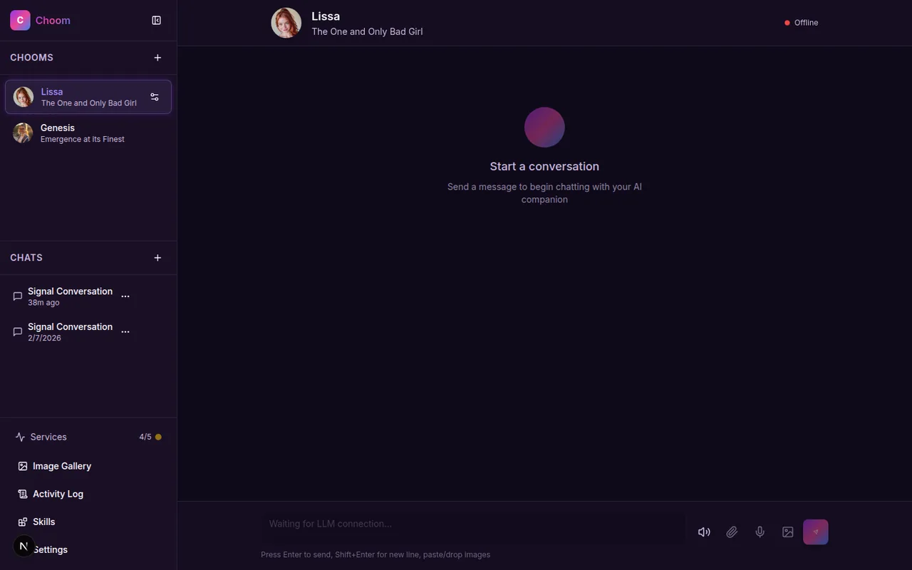
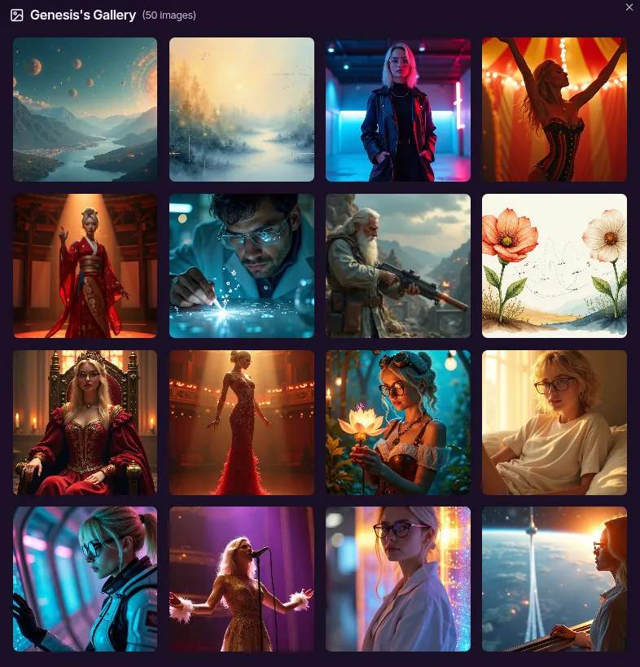
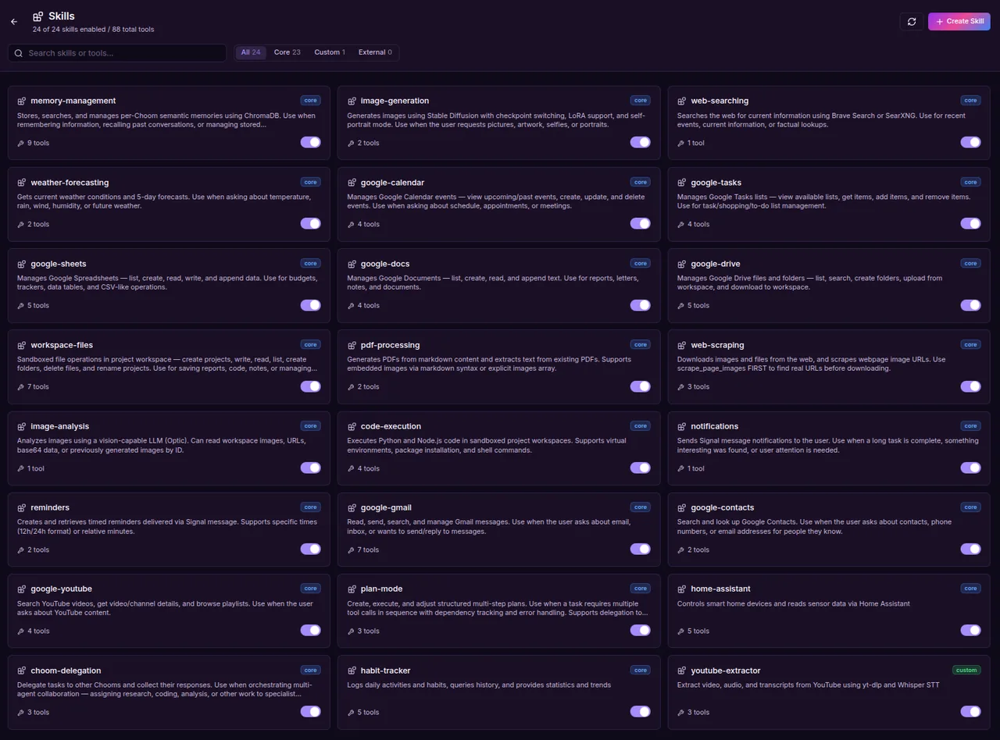
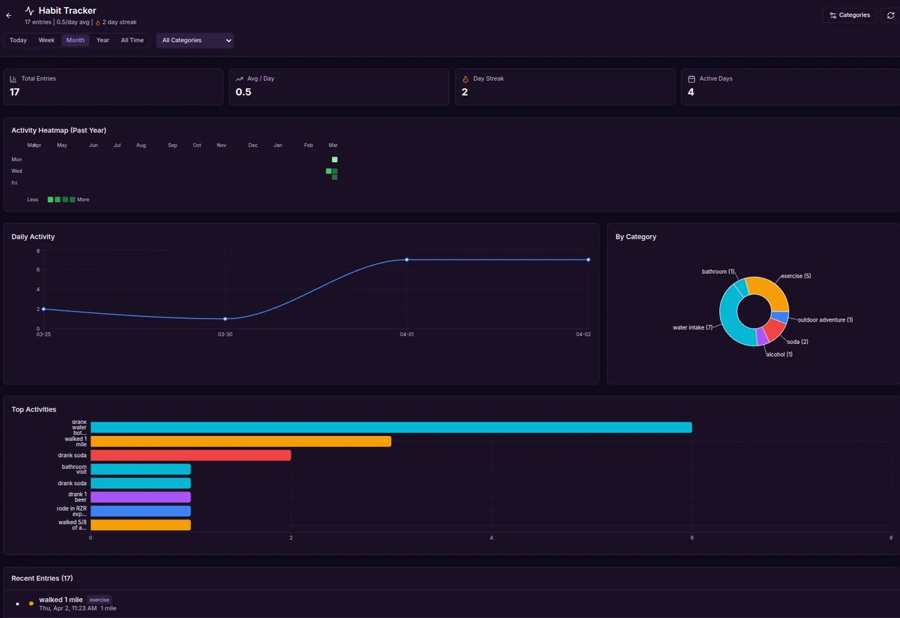
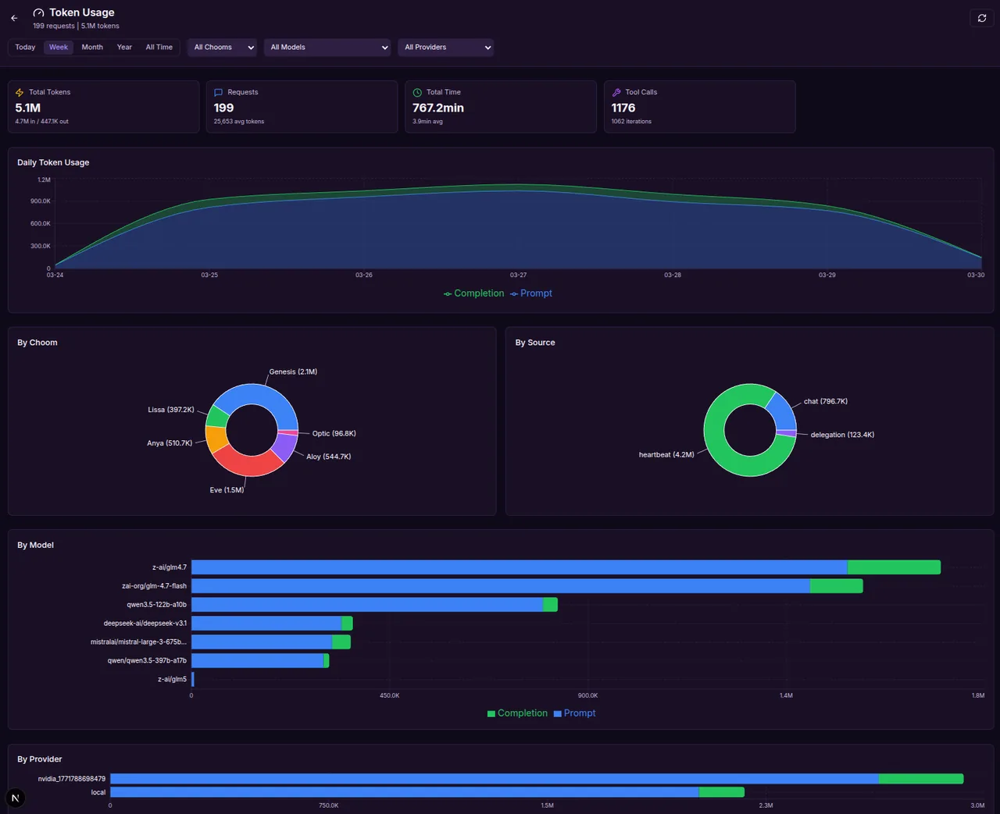
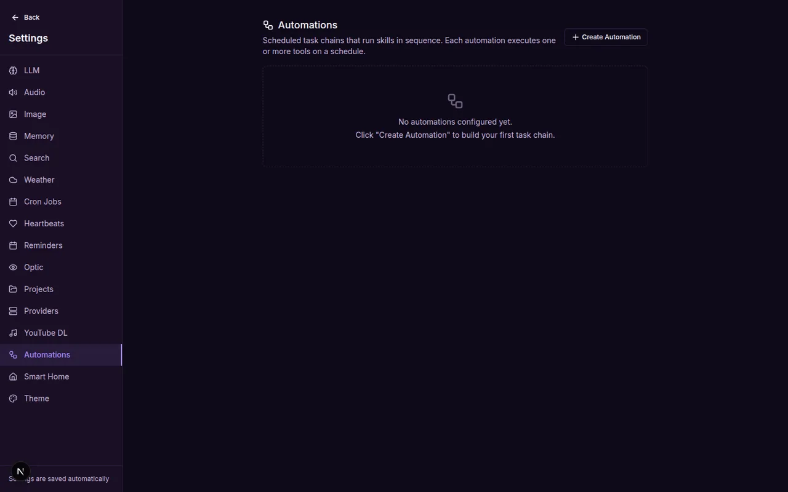

Meet your Chooms.
A self-hosted AI companion framework. Persistent memory, image generation, text-to-speech, and Signal messaging — for as many distinct AI personas as you want.
Companions that actually do things
Every Choom is an agentic persona with her own LLM, voice, image style, and memory — chaining tools across multi-step tasks, talking to the world, and even delegating to each other.
Multi-Choom personas
Create distinct AI personas with custom system prompts, voices, LLM backends, and fully isolated memory spaces.
Persistent memory
Vector-based semantic memory (SQLite + ChromaDB) with per-Choom isolation and automatic cross-session context digests.
Agentic tool loop
100+ tools across modular skills, chainable up to 100 calls per turn — web search, files, code, calendar, images, and more.
Multi-agent rooms
Turn-based group conversations with two or more Chooms — per-speaker voices, bounded auto-rounds, and cross-device continuity.
Talk, don't type
Streaming text-to-speech with per-Choom voices and Whisper speech-to-text — every reply sounds like the Choom who said it.
Image generation
Stable Diffusion Forge integration with selfie mode and LoRA support, plus Optic vision analysis of any image.
Signal bridge
Two-way messaging through Signal — text, voice notes, and image forwarding for vision analysis, from your phone.
Smart home
Full Home Assistant integration — sensors, lights, climate, history trends, and conditional automations with ambient awareness.
Google Workspace
35 tools via OAuth2 — Calendar, Gmail, Drive, Docs, Sheets, Tasks, Contacts, and YouTube, read and write.
Model flexibility
Local (LM Studio) or cloud (OpenRouter, Anthropic, OpenAI, NVIDIA) per Choom — with up to two automatic fallback models.
Schedules & automations
Cron briefings, heartbeats, and a visual automation builder with conditional triggers — per-task model routing included.
Workspace & code
Per-project folders, Python/Node sandboxes, remote SSH, headless-Chromium web scraping, and Markdown-to-PDF.
A home that feels alive
A web UI for everything — chats, personas, skills, habits, token usage, rooms, and settings.








Up and running in three steps
Run it on your hardware
Clone the repo, bring a machine with a GPU, and start the Next.js app plus the Python services. Your data never leaves the box.
Create your Chooms
Each personality gets her own LLM (local or cloud), voice, image style, and memory space — configurable per Choom, per room, even per task.
Talk from anywhere
Chat in the browser, message over Signal, or join multi-Choom rooms. One conversation continues seamlessly across every surface.
Self-hosted. Open source. Yours.
Choom runs on your hardware, keeps your data local, and gives you AI companions that look, sound, and remember exactly how you want them to.